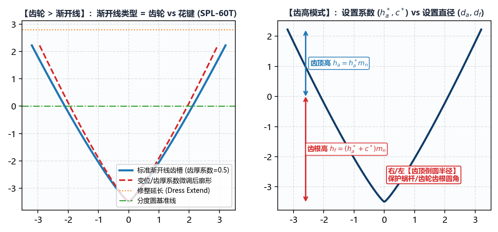

5.4 齿轮：渐开线齿轮与花键齿形生成
切换至 绘图工具 -> 齿轮 -> 渐开线，该模块用于参数化生成标准或变位渐开线直齿/斜齿轮以及渐开线花键（如 SPL-60T）的精确端面齿槽曲线 DXF。
一、渐开线类型（齿轮 vs 花键）与 齿高模式

1. 渐开线类型 切换逻辑
齿轮（默认）： 面向圆柱直齿轮与斜齿轮成形磨削，开放齿高模式下拉框（支持按设置直径或设置系数两种方式定义齿顶与齿根高度）；花键： 面向 DIN 5480 / GB/T 3478 等渐开线花键轴成形磨削（如 60 齿花键SPL-60T）。切换为花键时，系统自动隐藏齿高模式下拉框，固定采用工程图纸最直观的齿顶圆直径() 与齿根圆直径() 直接控制齿槽上下边界。
2. 两种 齿高模式（当 渐开线类型 = 齿轮 时）
设置直径：在下方齿高调节区域直接输入齿顶圆直径() 与齿根圆直径()；设置系数：在下方齿高调节区域输入标准无量纲系数——齿顶高系数(，标准值1.0) 与顶隙系数(，标准值0.25)，系统自动根据法向模数 、齿数 、螺旋角 与变位系数 推算齿顶圆与齿根圆直径。
二、全参数明细与青绿色微调框（#6bb1aa）用法
| 参数名称 | 单位 | 工程含义与配置说明 |
|---|---|---|
渐开线类型 |
选项 | 下拉选择 齿轮 或 花键。 |
法向模数 () |
齿轮或花键的法向模数（必须 ）。 | |
齿数 () |
正整数 | 工件总齿数（如 SPL-60T 填 60）。 |
法向压力角 () + 右:/左: #6bb1aa |
∘^\circ∘ |
白底主框输入标准法向压力角（齿轮常取 20，花键常取 30 或 37.5）；右侧两个 #6bb1aa 青绿色微调框分别用于对右齿面与左齿面压力角进行独立微调补偿（消除齿形角偏差）。 |
螺旋角 () + 螺纹旋向 |
∘^\circ∘ |
分度圆螺旋角（直齿/直花键填 0；斜齿轮填入实际螺旋角并选择 右旋 或 左旋）。 |
变位系数 () + #6bb1aa 修正框 |
无量纲 | 白底主框填图纸设计法向变位系数（标准无变位填 0）；右侧 #6bb1aa 框用于现场磨削深度微调。 |
齿厚系数 + #6bb1aa 修正框 |
无量纲 | 定义分度圆处弧齿厚与齿距的比值（标准对分齿厚填 0.5）；当需要通过减薄/加厚砂轮来直接调整公法线长度 或跨棒距 值时，直接在右侧 #6bb1aa 青绿色框中输入微调量！ |
齿高调节 |
或系数 | 输入 齿顶圆直径 / 齿根圆直径（或 齿顶高系数 / 顶隙系数）。 |
修整延长 |
齿顶圆以外向上延伸的修整余量高度（默认 0 ~ 0.5 mm）。 |
|
齿顶倒圆半径 (右: / 左:) |
生成的砂轮齿顶（即对应工件齿槽根部）左右过渡圆角半径。 | |
保存文件 + 选择文件 |
路径 | 指定输出的端面齿形 .dxf 保存路径。 |
与
基本参数的联动提示：由绘图工具 -> 齿轮 -> 渐开线生成的*-info.txt会自动将DXF 齿形类型标记为端面(左)，并将分度圆直径 与导程 （直齿时导程定义为无穷大等效超大值）自动记录。